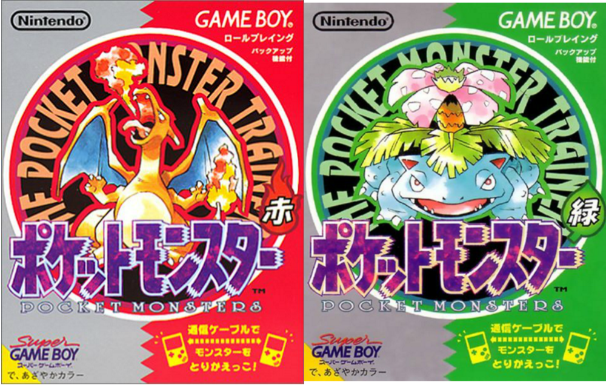
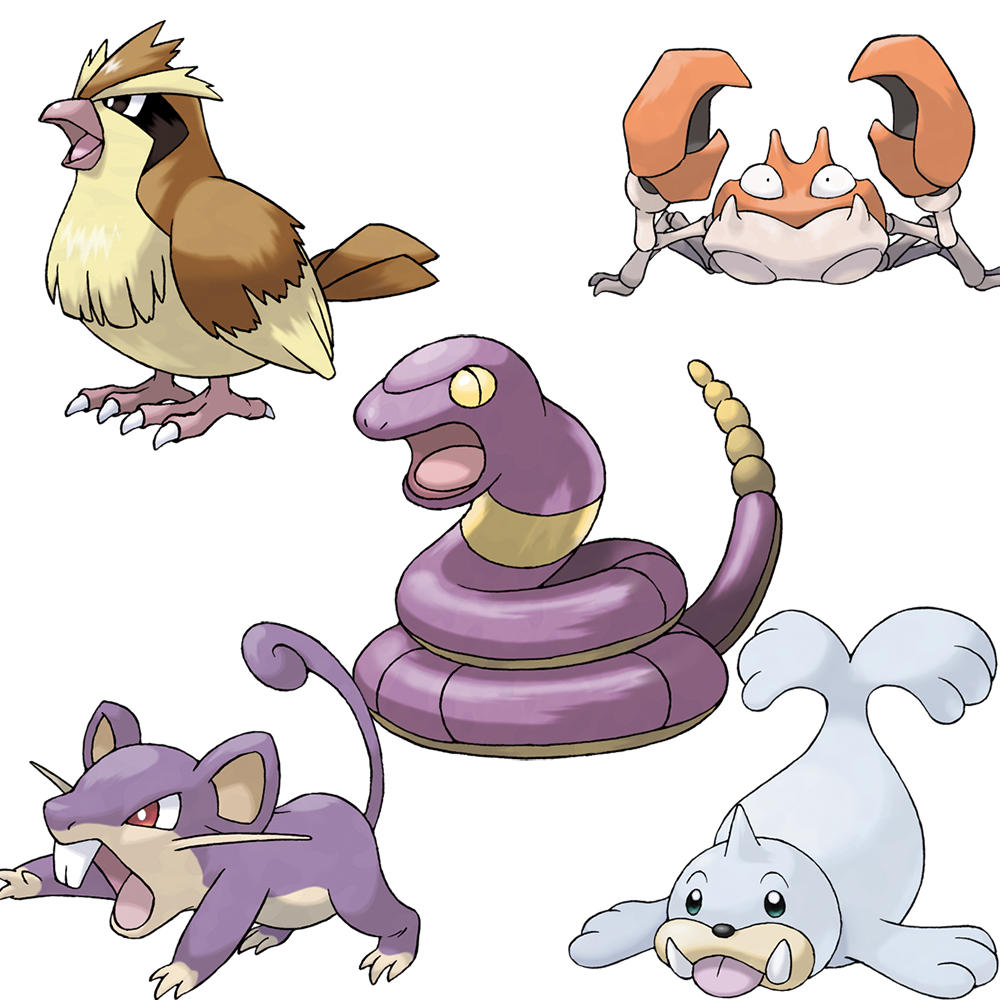

Pokémons da geração I
A primeira geração (Geração I) da franquia Pokémon apresentou 151 criaturas fictícias introduzidas em 1996 no jogo de Game Boy, Pokémon Red e Green.
São 151 Pokémon da Geração I em sua sequência do Pokédex Nacional - uma enciclopédia eletrônica no jogo, que fornece várias informações sobre números de Pokémon. O primeiro Pokémon, Bulbassauro, numerado de 001 e o último de Mew, numerado de 151.

Design e desenvolvimento
A maioria dos Pokémon desta geração tinha designs relativamente simples e eram altamente análogos às criaturas da vida real, incluindo, entre outros: Pidgey (um pombo), Krabby (um caranguejo), Rattata (um rato), Ekans (uma cobra), e Seel (uma foca). Muitos Pokémon nos jogos originais serviram como base para repetir conceitos mais adiante na série.
